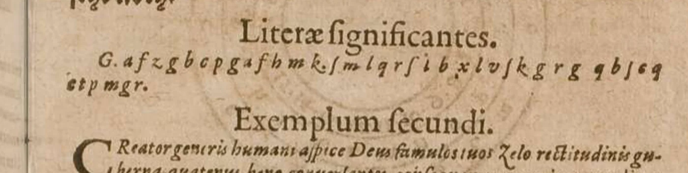

Frankfurt, 1608 · Clavis, printed pp. 56–57
Modus II: from printed letters to German
Follow one worked example from the printed page through transcription and extraction to a mechanically recomputed plaintext. Every visual has an equivalent table or prose account.
1. Printed example

Printed evidence
Intentio Ich bitte dich komm von stund an zu mir/ es thut sehr noth.
English I beg you, come to me at once; it is very urgent.
Full p. 56, rule and wheel · Full p. 57, alphabet and example


Herzog August Bibliothek Wolfenbüttel, Fb 243 · Library image 249
German Intentio in the reading edition · Latin OCR for the printed example
2. Transcribe and extract
Transcription / repair Count the printed prayer from Creator through Amen. Join line-end divisions and expand the abbreviated words as consequamur and miserosque. The subscription follows the prayer.
Creator generis humani aspice Deus famulos tuos Zelo rectitudinis guberna quatenus bene conuersantes consequamur præmium gaudium cælestium Adiuua nos fragiles miserosque homines sanctisque moribus exorna catholicæ pietatis sancto quæsumus mentes nostras lumine illustra quatenus tuam recolamus passionem sedulo cum lacrymis operibus bonis Iesu Christe Saluator libera nos virtute effusi sanguinis tui catholicæ vnitatis gubernator salua populum tuum grauiter afflictum quem dudum beatissimo effuso sanguine in cruce moriens redemisti aspice quam affligitur grauissime populus sub crudelissimo Turco libera nos miseros per gratiam qua redemisti nos Amen
Initials from the alternate words gafzgbcgafhmcsmlqrslbclvscgpgqbscrqgstnpqn
Inferred operation Read the significant-letter line in order. Independently take the initial of each even word in the cover prayer.
The two lines preserve the photographed letter order and the long s. Spaces separate individual types. For calculation, lowercase G, write ſ as s and omit punctuation. The previous transcription repeated the s between v and k.
Printed letter lines
G a f z g b c p g a f h m k ſ m l q r ſ i b x l v ſ k g r g q b ſ e q
e t p m g r
gafzgbcpgafhmksmlqrsibxlvskgrgqbseqetpmgr
3. Invert the printed Alphabetum
Printed evidence Each first letter is plaintext; each second letter is its printed cipher substitute.
| Plain | a | b | c | d | e | f | g | h | i | k | l | m | n | o | p | q | r | s | t | v | x | z |
|---|---|---|---|---|---|---|---|---|---|---|---|---|---|---|---|---|---|---|---|---|---|---|
| Cipher | x | z | a | b | c | d | e | f | g | h | i | k | l | m | n | o | p | q | r | s | t | v |
Inferred operation The print moves each plaintext letter two places back on its 22-letter circle. Invert the 22 printed pairs and substitute for each cipher letter in sequence.
4. Read the computed result
Decoded from the printed letter line
ichbiderichkomvonstvldanzvmitisdvgsgxroit
Printed Intentio with normalized spelling
ichbittedichkommvonstvndanzvmiresthvtsehrnoth
Lowercase the German, omit spaces and punctuation, and write u as v for comparison. Compare the two readings with the full printed page.
Cipher letters required by the printed German
gafzgrrcbgafhmkksmlqrslbxlvskgpcqrfsrqcfplmrf
The table counts each printed source from its beginning. A dash marks the end of that source.
| Position | Printed cipher | Decoded | German | Cipher for German | Even cover word | Initial |
|---|---|---|---|---|---|---|
| 1 | g | i | i | g | generis | g |
| 2 | a | c | c | a | aspice | a |
| 3 | f | h | h | f | famulos | f |
| 4 | z | b | b | z | Zelo | z |
| 5 | g | i | i | g | guberna | g |
| 6 | b | d | t | r | bene | b |
| 7 | c | e | t | r | consequamur | c |
| 8 | p | r | e | c | gaudium | g |
| 9 | g | i | d | b | Adiuua | a |
| 10 | a | c | i | g | fragiles | f |
| 11 | f | h | c | a | homines | h |
| 12 | h | k | h | f | moribus | m |
| 13 | m | o | k | h | catholicæ | c |
| 14 | k | m | o | m | sancto | s |
| 15 | s | v | m | k | mentes | m |
| 16 | m | o | m | k | lumine | l |
| 17 | l | n | v | s | quatenus | q |
| 18 | q | s | o | m | recolamus | r |
| 19 | r | t | n | l | sedulo | s |
| 20 | s | v | s | q | lacrymis | l |
| 21 | i | l | t | r | bonis | b |
| 22 | b | d | v | s | Christe | c |
| 23 | x | a | n | l | libera | l |
| 24 | l | n | d | b | virtute | v |
| 25 | v | z | a | x | sanguinis | s |
| 26 | s | v | n | l | catholicæ | c |
| 27 | k | m | z | v | gubernator | g |
| 28 | g | i | v | s | populum | p |
| 29 | r | t | m | k | grauiter | g |
| 30 | g | i | i | g | quem | q |
| 31 | q | s | r | p | beatissimo | b |
| 32 | b | d | e | c | sanguine | s |
| 33 | s | v | s | q | cruce | c |
| 34 | e | g | t | r | redemisti | r |
| 35 | q | s | h | f | quam | q |
| 36 | e | g | v | s | grauissime | g |
| 37 | t | x | t | r | sub | s |
| 38 | p | r | s | q | Turco | t |
| 39 | m | o | e | c | nos | n |
| 40 | g | i | h | f | per | p |
| 41 | r | t | r | p | qua | q |
| 42 | — | — | n | l | nos | n |
| 43 | — | — | o | m | — | — |
| 44 | — | — | t | r | — | — |
| 45 | — | — | h | f | — | — |
Plain-text account
The first five decoded letters agree with the German. At position six the list prints b, also the initial of bene. The pair db decodes it as d. The first t in bitte would require r under the pair tr. At position eight the letter list gives p and the eighth even cover word is gaudium, beginning with g. The page preserves both differences.
Provenance and limits
- Frankfurt, 1608, Herzog August Bibliothek Wolfenbüttel, Fb 243. Printed p. 56 describes the shift and diagrams the circle. Printed p. 57 gives the paired alphabet, German intention, significant letters and cover.
- AI visual collation of HAB Fb 243 on 23 November 2026 checked all 41 types in the significant-letter line, the 22 printed pairs, the German and the 85-word prayer. No human review is documented.
- The public evidence register preserves exact crops of the letter line and prayer. The earlier 42-letter transcription is retained in the correction history.